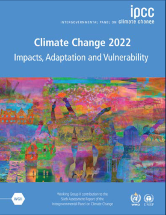
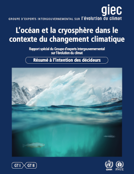

Les cyclones traversent ou passent à proximité de la Réunion presque tous les ans, pendant la saison cyclonique entre novembre et avril. À chaque passage de cyclone ravageur ici ou ailleurs on se demande si le réchauffement climatique n’y est pas pour quelque chose. Quel est l’impact du réchauffement climatique sur les cyclones ?
Dans les années 60, Claude Lorius, chercheur au CNRS a l’idée d’effectuer des forages dans la glace de l’Antarctique pour y analyser les bulles d’air prisonnières de la glace depuis des siècles. En 1977-1978, il rallie le dôme Charlie qui deviendra la station Concordia en Antarctique et creuse jusqu’à 900 m de profondeur pour y extraire la mémoire de 40 000 ans d’histoire climatique. En 1984, sur la base russe de Vostok, il creusera jusqu’à 1 500 km à l’intérieur de l’Antarctique lui permettant de remonter des carottes de glace vieilles de 150 000 ans. C’est avec ce matériel glacé que les chercheurs pourront reconstituer le climat de la terre, son caractère cyclique puis le lien entre la concentration de CO2 dans l’atmosphère et les hausses de températures. D’autres recherches montreront que l’augmentation des températures est provoquée par ce qu’on appelle l’effet de serre qui est accentué notamment par le CO2 dans l’atmosphère.
Après le dernier forage sur la base de Vostok, ils constateront aussi que l’augmentation des températures à partir de la révolution industrielle est anormale et que cette augmentation s’emballe au XXᵉ siècle à mesure que les activités humaines émettent de plus en plus de CO2. Ces résultats publiées en 1987 dans la revue Nature ont été depuis confirmés par de nouvelles études et largement diffusées par les différents rapports du GIEC.
Les cyclones sont des phénomènes maritimes et sont donc par définition éloignés de la terre où les humains vivent. Leur observation est donc rare. Les seuls moments où les cyclones pouvaient être observés était à bord de bateaux ce qui n’offre pas toujours l’occasion d’en rendre compte ou lorsque le cyclone touche terre. Jusqu’à l’arrivée des satellites d’observation dans les années 60 à 70 il était impossible de dénombrer de manière empirique tous les cyclones se formant sur une zone donnée.
Les études sur les cyclones, les ouragans et les typhons visent, à partir des données accumulées à partir des années 60, à découvrir comment se forment les cyclones et comment il serait possible de prévoir leur évolution ou leur trajectoire. À chaque catastrophe majeure on cherche aussi à savoir à quelle fréquence ces phénomènes exceptionnels se reproduisent et s’ils sont amenés à se produire plus ou à d’autres endroits.
{% Image page, "Alexander-Gerst-cyclone-zorbas-space-station.jpg", "Photo du cyclone Zorbas depuis IIS. sont visibles les modules Soyouz et express ainsi qu’un météore" %}
Photo du cyclone Zorbas en septembre 2017 par Alexander Gerst (NASA) depuis la station spatiale internationale.
L’observation exhaustive des cyclones, ouragans et autres typhons sur la planète a donc débuté dans les années 60. Cela veut dire que nous ne disposant que d’une cinquantaine d’années de données sur les cyclones avec un dénombrement exact et une estimation de leur force. C’est trop peu pour pouvoir en tirer des conclusions quant à une évolution de ces phénomènes. De plus, pour étudier les effets du réchauffement climatique, il faudrait comparer les cycles entre la période actuelle où le réchauffement climatique a commencé et une période antérieure à la révolution industrielle où les cycles climatiques ne sont pas influencés par les rejets de CO2 des activités humaines. Si nous disposons de quelques témoignages historiques de catastrophes provoquées par les cyclones, ces données sont trop parcellaires pour pouvoir comparer les cyclones en nombre et en force avec la période actuelle.
Les données recueillies ces dernières années ont quand même permis des avancées majeures comme connaitre les conditions de formation des cyclones et élaborer des prédictions basées sur les modèles météorologiques. Pour prévoir le temps qu’il fera, les climatologues on recourt à des modèles qui ne sont rien d’autres que des programmes informatiques du genre : S’il y a un nuage ici et que le vent souffle par là, alors il va pleuvoir là-bas.
La précision des prévisions météo dépendent du nombre de données utilisées. Les données de base comme la pression atmosphérique, la température, la couverture nuageuse, la force et la direction du vent à un instant précis sur une zone donnée, mais aussi les mêmes données dans les zones voisines qui peuvent influencer les résultats ainsi que les mêmes données à chaque altitude de cette zone permettent de calculer les événements suivants dans cette zone et de prévoir le temps qu’il fera. Les modèles actuels incluent un nombre de données de plus en plus important comme le taux d’humidité, le type de surface terrestre (mer, plaine, montagne, le type de végétation, la salinité de la mer, sa température, les courants marins, la présence d’aérosols dans l’atmosphère etc.
Au-delà des prévisions météorologiques, ces modèles climatiques sont capables de calculer des tendances pour l’année ou les années à venir. L’avantage de ces modèles est que l’on peut changer les données des événements et obtenir des tendances pour ces scénarios jamais observés. Par exemple que se passerait-il si la température moyenne de la mer augmente de 2 °C. Les modèles climatiques sont de plus en plus précis mais les résultats peuvent varier selon les méthodes de calcul et peuvent faire l’objet de débats. Cela explique les incertitudes qui subsistent autour des prévisions en matière de cyclones tropicaux.
En l’état actuel des recherches les météorologues estiment que les cyclones se forment quand trois conditions sont réunies :
La rotation de la terre crée une force d’inertie qui dévie les vents et les font tourner vers la droite dans l’hémisphère nord et vers la gauche dans l’hémisphère sud. C’est pour cela que les tempêtes ont un mouvement circulaire. Les vents qui devraient aller en ligne droite vers le centre d'une zone de basse pression, sont contraints de tourner autour de cette zone de basse pression.
Les études ont montré que l’eau de surface de la mer devait être supérieure à 27 °C sur une profondeur suffisante (au moins 50 mètres) sans quoi l’eau de surface sera rapidement refroidie par le vent. La chaleur latente de l’eau va se dégager dans les niveaux supérieurs de la tempête, générants des précipitations. La température en altitude du cyclone va s’élever de 15 à 20 °C au-dessus de la température ambiante. C’est à cause de cette condition que les cyclones tropicaux se forment durant une période précise en été. Dans l’Océan Indien, la saison cyclonique dure environ de novembre à avril parce que c’est justement à cette période que la surface de la mer pet dépasser les 27 °C.
Pour favoriser le développement d’un cyclone, il faut que les vents qui soufflent dans la même direction à toutes les altitudes. S’il y a cisaillement vertical, c’est-à-dire si des vents opposés règnent à différentes altitudes, le développement du cyclone peut être stoppé. Depuis environ 1995, le cisaillement vertical moyen au-dessus de Golfe du Mexique est plutôt faible, ce qui est favorable au développement des ouragans.
Quand on connait les trois conditions à la formation des cyclones, que l’une d’elle est la température élevée de l’eau et que l’on sait que le réchauffement climatique devrait entrainer un réchauffement de la surface des océans, on peut avoir l’intuition que le réchauffement climatique va avoir un impact sur la formation des cyclones. Plusieurs études ont tenté de vérifier cette intuition. Les données des 50 dernières années ne permettent pas de détecter une évolution dans le comportement des cyclones qui serait corrélée avec le réchauffement climatique, mais elles dégagent des tendances réelles et observées qui peuvent être de bons indices.
{% Image page, "temperature-des-oceans.png", "histogramme des températures de surface des océans entre 1955 et 2020 comparées à la moyenne de la période. bleu en dessous jusqu’en 1985 environ puis rouge après 85 et en augmentation constante." %}
Températures de la surface des océans entre 1955 et 2020 comparées à la moyenne de la période.
les rapports du Groupe d’experts intergouvernemental sur l’évolution du climat (GIEC). Créé en 1988 par le Programme des Nations unies pour l’environnement (PNUE) et l’Organisation météorologique mondiale (OMM) pour étudier le réchauffement climatique, fait état d’une augmentation des phénomènes extrêmes et une augmentation du nombre de cyclones tropicaux intenses pour les années à venir.
{% Image page, "infographie-changements-GIEC.png", "infographie titrée Les changements s’intensifient pour chaque incrément de réchauffement planétaire: montrant l'augmentation des températures, secheresses, précipitations, neige (en diminution) et cyclones tropicaux intenses selon l'augmentation de la température planétaire. À +1,5° on a 10% des cyclones tropicaux sont intenses, à +4° on a + 20% des cyclones tropicaux sont intenses" %}
Les changements s’intensifient pour chaque incrément de réchauffement planétaire faisant augmenter la proportion de cyclones tropicaux qui sont intenses (plus de 3 sur l'échelle de Saffir-Simpson). Infographie tirée du résumé pour tous du rapport Changement Climatique 2021 publiée par le GIEC.
Pour écrire ces rapports, les membres du GIEC ne conduisent pas d’études sur les cyclones mais examinent les études existantes pour en sortir les éléments les plus significatifs concernant le changement climatique. Les conclusions et la portée de ces études permettent d’établir des niveaux de probabilité hautes ou basses dans leurs rapports, permettant la prise de décision politique.
Les scientifiques ont donc tenté de répondre aux questions suivantes sur une zone de la planète ou bien globalement, soit en reprenant les données météorologiques enregistrées depuis 50 ans soit en utilisant les modèles climatiques. La plupart de leurs articles publiées dans les revues scientifiques ont été reprises dans les rapports du GIEC.

Climate Change 2022: Impacts, Adaptation and Vulnerability
 Rapport spécial du GIEC 2019: L’océan et la cryosphère dans le contexte du changement climatique Résumé à l’intention des décideurs (PDF).
Il est assez facile de répondre à cette question en comptant chaque année le nombre de cyclones qui ont été recensés sur une zone géographique. Si une augmentation du nombre d'ouragans a été observée dans l’Atlantique nord, il semblerait que ce soit une augmentation cyclique sans rapport avec le réchauffement climatique. Le nombre de cyclones dans les autres zones est plutôt stable. Le site Firinga regroupe les informations cycloniques du Sud-Ouest de l’océan Indien depuis la première saison cyclonique enregistrée en 1965-1966. On n’y constate pas d’augmentation du nombre de cyclone ni du nombre de cyclone tropicaux intenses. Le nombre de systèmes est irrégulier mais en moyenne plutôt stable dans l’océan Indien.
{% Image page, "repartition-systemes-saison-cyclonique-66-92.png", "histogramme à barres montrant le nombre de cyclones par saison" %}
Graphique de répartition des systèmes de la saison 1966 à 1992, source Firinga.com
{% Image page, "repartition-systemes-saison-cyclonique-93-23.png", "histogramme à barres montrant le nombre de cyclones par saison" %}
Graphique de répartition des systèmes de la saison 1993 à 2023, source Firinga.com
Le réchauffement de la surface des océans s’accompagne aussi, effet de serre oblige, d’un réchauffement atmosphérique, si bien que la différence de température entre l’eau et l’air en altitude, favorable à la formation des dépressions tropicales, n’évolue guère, expliquant par là que le réchauffement climatique ne semble pas avoir d’effet notable sur le nombre de cyclones.
Encore une fois, les observations des trajectoires des cyclones depuis les années 60 devrait permettre de noter si les zones d’évolutions des cyclones s’élargissent vers les régions tempérées. Les observations intuitives sur cartes, sensibles aux fluctuations des phénomènes d’une année sur l’autre, semblent montrer qu’il n’y a, là aussi, pas de changement notable sur la plupart des zones à risque de la planète. Cependant, une étude publiée en 2014 dans la revue Nature s’est concentré sur la latitude moyenne de chaque cyclone à sa période de plus forte intensité et a constaté une tendance à une migration vers les pôles, des phénomènes cycloniques sur une distance de 53 à 62 kilomètres par décennie.
{% Image page, "global_tropical_cyclone_tracks-1985-2005.jpg", "carte du monde avec la trace de tous les cyclones tropicaux en couleurs de l’échelle de Saffir-Simpson." %}
Carte des traces de tous les cyclones tropicaux de 1985 et 2005. Les points montrent l’emplacement des cyclones à des intervalles de six heures, et leur couleur indique leur intensité sur l’échelle de Saffir-Simpson. Source: NASA
L’article ne tire pas de conclusion quant à l’influence du réchauffement climatique et se borne à relever la possible corrélation. Une autre étude de 2016 (PDF) se penche sur cette corrélation et reste très prudente. La migration des cyclones tropicaux vers les pôles semble correspondre à l’extension du climat tropical d’un degré de latitude vers les pôles à chaque décennie mais les différences relevées selon les bassins oblige les scientifiques à porter leurs études s’il n’t a pas d’autre facteurs environnementaux se déplaçant vers les pôles.
Comme expliqué plus haut, le GIEC a annoncé que l’intensité des phénomènes cycloniques allait augmenter. Cela veut dire qu’il n’y aura pas plus de cyclone à chaque saison, leur nombre devrait même baisser généralement, mais plus de cyclones intenses ou très intenses parmi ceux-ci. Le GIEC s'appuie entre autres pour cela sur un article de 2010 qui prévoit une augmentation de l’intensité des cyclones de 2 à 11 % d’ici 2100. Pour arriver à cette conclusion, l’étude ne s’appuie pas sur les données d’observations passées mais sur différents modèles climatiques. Cette méthode permet de pallier aux données trop fluctuantes et trop récentes dont nous disposons mais donne des résultats très différentes d’un bassin à l’autre.
Contrairement au déplacement des zones d’évolution des cyclones tropicaux, l’augmentation de l’intensité des cyclones est directement lié aux activités humaines notamment les émissions de gaz à effet de serre. C’est du moins ce qu’affirme un article de 2016 publié dans la revue Science.
L’affinage des modèles climatiques peut amener à faire varier les résultats. Ainsi un article publié en 2022 dans la revue Siences Advances détaille une nouvelle méthode de calcul qui prédit une multiplication par 2 du nombre de cyclones intenses (de catégorie 4 ou 5) d’ici à 2050 dans toutes les régions cycloniques excepté le Golfe du Bengale et le Golfe du Mexique.
Cette tendance est pour l’instant vérifiée par l’étude statistique des données récentes. Ainsi, une étude de l’académie des sciences des États-Unis sur les observations satellite entre 1979 et 2017, montre une augmentation de près de 8 % des cyclones majeurs (catégorie 3 à 5) décennie après décennie. Dans leur travail de compilation des études existantes, le GIEC a qualifié cette augmentation de l’intensité des cyclones de haute probabilité dans les deux rapports précités.
Cette question est la plus préoccupante étant donné les dégâts que peuvent causer les cyclones frappant les terres immergées et donc habitées. Une étude chinoise de 2016, s’est proposé d’affiner les données des premiers relevés météorologiques sur la zone nord Pacifique. Cette étude conclue qu’il y a une augmentation des atterrissages ( traduction littérale de landfall ) de typhons sur la zone depuis les années 1970. Elle prédit que l’augmentation des températures devrait accentuer le phénomène.
{% Image page, "typhons-chine-continentale-indochine-1950-2019.png", "deux graphiques avec courbes montantes (sauf une) puis deux carte de la façade maritime de la Chine et Indochine avec impacts des typhons en rose et bleu" %}
Cartes montrant les impacts des typhons de faible intensité (à droite) et ceux de des typhons de forte intensité, soit ≥ 64 kt (à gauche).
Les graphiques au-dessus montrent l’évolution du nombre de ces phénomènes entre 1950 et 2019.
Mais les données relevées depuis un demi-siècle sur une zone donnée ne sont peut-être pas suffisantes pour tirer de telles conclusions. Un article publié dans la même revue Nature en 2022 rappelle que cette augmentation des atterrissages et la lenteur de désagrégation des cyclones dans les terres sont encore des phénomènes très discutés. Une augmentation des atterrissages dans une zone du globe ne signifie pas forcément que le réchauffement global provoquera cette augmentation partout. Pour cette question, nous resterons donc dans l’incertitude.